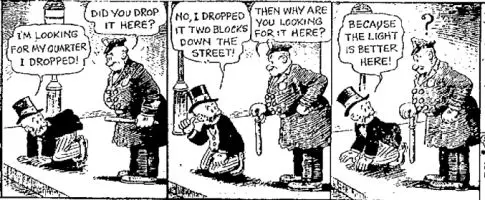
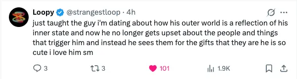
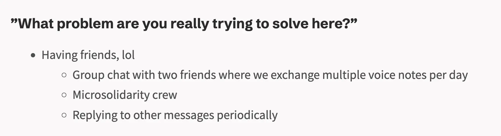
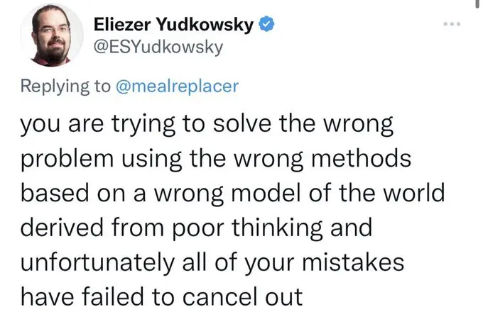

- 2025-08-05
- “What does it mean to be in ORI?” (Open Question)
- Note - this is a document of me thinking stuff through, so if I say something dumb, I may make progress on it a bit further down the document!
- E.g. right now the final section is called “Ok I’ve been on a walk and I think i’ve been being dumb”
- I haven’t really thought about ORI recently, but I’m in the Discord and poke my head in sometimes (mostly to marvel about how out of the loop I am, lol)
Phases of my involvement in ORI
Phase 1 → copying Defender’s path
- I initially got into it just by reading Defender’s post on how he learned to think
- I wrote about it here → “Learning to think the Defender of Basic way - Oh god there’s someone else like me” → about how excited I was to find someone who said that they "learned to think" at 30
- Initially, I copied him → “Defender says that what you should do is have conversations with people on Twitter with an alt, so you can learn more about them and the world”
- See e.g. Day 1 of trying to engage people on twitter via alt account
Phase 2 → elucidating my open questions
- “Oh wait, I’m applying what worked for Defender, but I don’t have the same open questions that he had”
- His obsession was something like “why don’t people agree?” or “why don’t people realise that we’ve figured stuff out” or something, I forget exactly what
- So, creating an alt and engaging with people in good faith, to figure out their world view etc, solved a problem for him
- But, I have no interest in this stuff!
- So, phase 2 became the phase of elucidating my own open questions, and they came pretty quick!
- It’s crazy to think that before this, this isn’t what I was doing. I was doing stuff like learning about John Boyd, doing Math Academy, because… it’ll educate me… it might be useful one day.. etc → rather than asking “what are my current burning questions”
Why had I never (explicitly) elucidated my open questions, until ORI?
- Partly it may have been a feeling of intractability → “obviously I’m not gonna read a book about how to fix my exact family, clearly it’s not something I can solve”.
- Too much looking outside, thinking that the knowledge is out there somewhere
- A feeling of overwhelm, a blind spot (always looking outside, meaning you never introspect → your problems become “ugh fields”, and you’ll never stumble across them, because you’re never looking where they are)
- The streetlight effect

Phase 3 (not begun, and the profundity has not “clicked” yet)
- Post-walk Alex - perhaps phase 3 is “soberly work on your problems, realising that they are probably solved, that they’re not intractable, that you can ask the universe for help
- Defender has messaged a few times about cultural engineering, and obviously open memetics is like, his whole thing
- So far, it hasn’t clicked for me how this could be relevant for me. But there is obviously strong evidence that there’s a “there” there
- So yeah, he’s messaged me sometimes about cultural engineering stuff, but it’s never resonated with me.
- Feels abstract, and like… I’m not worried about propaganda and dark memetics atm, I’m trying to solve my burning problems (e.g., what do I do about my family, how do I make money) - worldly shit?
- I’m kinda the resident normie in the ORI Discord server, and it’s a role that has a fair amount of resistance
- The (in my eyes) slightly schizo people are having a great time, saying a bunch of (to me) mostly incoherent shit, seemingly at the cutting edge of various things (e.g. “reality is information”). They seem to think they’re gonna make loads of money from this kinda stuff, somehow, soonish
- Vs I’m here trying to figure out how to ruminate less about my family, how I should make money, etc
- Defender has messaged a few times like “does cultural engineering resonate with you”, and “have you tried sharing your writings with people, tweeting your open questions?”
- The main threads that are alive for me currently
- “Oh man I’m such a normie compared to the people in the Discord” vs “destigmatise being dumb”
- “Oh man my concerns are so like quotidian/worldly/non-scalable” (e.g., thinking about my family rather than like, shaping culture or whatever the hell) vs “normies are useful because… it’s useful to have people around who are grounded… etc?”
- “The things I’m trying to do haven’t been solved” (?)
Investigating phase 3 stuff
1. Attention markets & engineering culture
- DoB sent this post to me (How attention markets work) and asked if it resonates at all
Then I said
“the post doesn’t resonate much beyond an initial ‘oh, this sounds like a cool way for me to discover new exciting cutting-edge stuff like blowtorch theory and observer theory!‘”
“but just from a like, “layperson who likes to read about potentially cutting edge stuff” POV”
nothing about “intentionally engineering culture” has resonated with me to perhaps that’s enough signal that i’m just not there atm
My lack of excitement about engineering culture as a failure on DoB’s part
- What Defender said:
- “I take this as a failure on my part”
- “I tried to answer this here:”
(A) → “dark memetics”
- but TL;DR it’s that at least some % of everything you know is engineered, not true (including politics, but also history, and science).
- The goal is to learn enough about how propaganda works to have a fighting chance at making sense of the world/for all of us to be less manipulable
(B) → “your problems are solved problems, you just don’t realise”
- I think the selling point I was trying to articulate is like, most problems in our world today already have solutions, but the environment is too noisy, so we don’t hear about them, and so they don’t get done
- ☝️ that’s an insane claim right? most people don’t believe it.
- Because if it’s true then it means most effort, most grants, are wasted money.
- People spend millions of dollars and thousands of man hours trying to solve problems that already solved, just that none one is paying attention and, that random people in society can fix this problem.
- Just by learning to cut through the noise, to find something true & amplify it
2. Attention markets and engineering culture doesn’t feel relevant?
- So initial gut sense is something like, “for the problems that I’m trying to solve, there aren’t solutions that I can just like, plug-and-play, because I still have to be the one to like, do the thing"
"Social sciences”-type stuff vs hard science-type stuff?
- E.g., is it true that the culture has already solved how to help my family?
- And I just need to get better at prompting the universe, remembering that I’m a cell inside an organism? ORI idea - the universe (you’re a cell inside an organism)
- (I guess me writing this up and sending it the the ORI discord and DMing it to Defender is an instance of me contacting other cells in the organism!)
- It seems like the human condition that no one agrees on this stuff, that there are no universal quick fixes, it’s hermeneutics all the way down, there’s no foundation to grasp onto, etc
- Or is something like “learn about family systems theory, convince family to go to therapy, iterate from there” as good at it gets, and still requires a lot of work from me?
- Or perhaps someone has “solved” it and it’s a different thing, it’s “dude don’t even bother with family therapy, you can’t change other people, you just need to do 1000 hours of metta meditation” or something

- ☝️ data-point for this that I just saw
- Or “dude DFW has already provided the road map in This is Water”
- What “This is Water” means to me
- And I just need to get better at prompting the universe, remembering that I’m a cell inside an organism? ORI idea - the universe (you’re a cell inside an organism)
- This is why I'm skeptical re: fixes about this kind of thing - it seems very person-dependent.
- Like, maybe there is frontier knowledge that solves problems in maths or something, but my very quotidian everyday concerns feel much more akin to the social sciences or psychology or something - no “real answers”, no concrete truths, etc
- But, maybe I’m just not realising that these things are in fact solved, it’s just not commonly known?
- E.g., maybe there actually are very easy fixes here, like “dude, stop trying to change your family, move into an intentional community”. Idk
- Like, if I’m trying to figure out some shit like Observer Theory, let’s say, then if I “post into the void” enough, someone may reply like “oh shit this other person is working on this too!” and then we work on it together, we progress the theory, we predict things (e.g. what Blowtorch Theory did), and we… monetise it or some shit
- Vs it feels at least intuitively like something as specific as family stuff won’t have a similar kind of “feedback loop”?
- Like, someone else with the same family setup as me
- (But then, maybe all people, all families are actually very similar? Like, “complex adaptive systems” vibes - complex emergent properties arising from very simple local rules? Maybe I’m totally wrong that a family is more complex than like, Observer Theory, lol. May be incredibly myopic. Maybe this is way simpler than I’m imagining?)
- Like, someone else with the same family setup as me
- Like, maybe there is frontier knowledge that solves problems in maths or something, but my very quotidian everyday concerns feel much more akin to the social sciences or psychology or something - no “real answers”, no concrete truths, etc
Maybe I’m being dumb and forgetting how to think
- I’m acting like “don’t you get it, my open questions are unknowable!“. “I can’t tweet about this because no one can answer this for me, I have to figure it out myself!”
- Vs approaching them like a scientist → making predictions, running experiments, etc. Collaborating…
- (Still feels unlikely that people would want to collaborate with me on this stuff, vs e.g. “let’s pontificate on Observer Theory together”)
- I wonder if the stuff I’m working on, because it’s so quite emotive and personal (how do I make money, what do I do about my family, how do I think better) → maybe I've been in a bit too like, blended with the anxiety and overwhelm, rather than zooming out and being like "ok, scientist mode, let's go"
- Below, Defender actually asks me how I handle rationalising without letting emotions get in the way. I’ll denote in blue font. I wonder if he’s pointing at the same thing
- So maybe phase 3 is something like getting more scientific, a more neutral observer? Idk
Like, what am I trying to solve?
- “How can I improve my ability to think?” (Parent Page)
- If there was someone smart in my life who could peer into my brain and say like “yes, you’re already a good thinker, you can pause this”, or like “oh dude, it’s crazy that you don’t know [topic], you gotta rectify that ASAP”, that’d be great…
- I’m paying a philosophy/ethics tutor
- “How can I change how to orient to my family?” (Open Question)
- See the above re: how this feels very difficult to “solve” like an exact science? (I may be wrong)
- “How should I make money?” (Open Question)
- As far as I can tell, this is something that is very personal (because it relates to my personal interests, personality type, need to find projects that are super alive for me and aligned with my “mission” or “gifts”, whilst also paying), and thus isn’t something that has already been solved by the culture?
- Unless e.g. I’m believing false propaganda here
- Creating things (parent page)
- This is a new one, not many writeups on it yet, but I’ve been deeply, autistically passionate about various things in my life, and like, idk what to do with the knowledge/passion
- On connecting with people more
- Gut sense is “group house in London with my good friend Simmo and some other people we can rustle up”
Ok, but so obviously DoB thinks that cultural engineering is relevant to me?
- Is that because:
- He sees that my “problems” are fake? Downstream of “dark memetics”?
- E.g., there’s the schizoposter “Crayon” who would probably say something like “the society you think you live in no longer exists”, etc. Like, all my problems are downstream of me believing in the importance of stuff that hasn’t really mattered for a few decades, like… having a conventional full time job etc, idk.
- Some meta-crisis thinker has a similar quote of like “we’re all living in a world that no longer exists”
- Maybe instead of doing object-level stuff, shift the culture and your problems go away?
- But of course, object-level, worldly concerns feel more pressing and possibly tractable than like, “let’s shift the Overton window, and don’t you realise, this is all fake anyway”, etc, idk
- Or, is it because he’s saying that my problems are solved, and I just need to “probe the universe” better?
- ORI idea - the universe (you’re a cell inside an organism)
- However, I only have ~150 twitter followers, it’s hard to probe 😅
- ORI idea - Problems are actually already solved
- He can see that I’m not thinking things through all the way → I’m getting stuck in overwhelm mode, acting as if things are intractable and unknowable, rather than approaching things as a scientist?
- He sees that my “problems” are fake? Downstream of “dark memetics”?
Other
DoB looking at my open questions
Getting better at thinking
- for the question of “getting better at thinking”,
- where does the role of emotions/intuition fall for you in the pursuit of truth?
- Like, do you have a way to not let “emotions get in the way of your rational processing”?
- Honestly, no, I’m not great at preventing emotions from getting in the way of rational processing
- But this… feels like a good thing to me? Like, not being a disembodied, alexithmic, left-hemisphere-captured rationalist
- E.g., I wrote up a thing about whether I should go to a friend’s bday thing in a different country, and the writeup (and the Guesstimate model I made, lol) clearly showed that going was a good idea. But I even after the rational writing up and weighing up options etc, it still just felt like a “no” in my body, so I trusted that, which felt good
- Note → now I’ve written more, I’m wondering if my emotions have been blocking me making progress, by making my open questions feel intractable?
- Honestly, no, I’m not great at preventing emotions from getting in the way of rational processing
New job
- New job
- I’m also curious how your (potential) new job is going, but also understand if you don’t want to reflect on that publicly- It feels too early to say anything too definitive yet - today was my 7th work day. It’s been ok - it’s not thrilling, it’s not terrible. I may be able to make it better, or there may be key incompatibilities, I’m still trying to figure this out… could for sure say more privately
- There’s a sense of not wanting to be an internal operations person, feels bad in a few ways
Friendships
- Friendships
- Screenshot from one of my docs:

- have you tweeted this / and or have people in mind that you’d like to be in a study group with, and have you tried @ ing them / asking them?- Oh, perhaps my wording was unclear → these are the things I currently do. I’m also planning a group house for ~October. This feels like a solved problem!
Get better at probing the universe?
- Tweet more? Get over “small account aversion”?
- Post more in ORI discord?
- Write up a post on how probing the universe has benefited me so far (already a tiny version of this re: Circumstantial luck page/what it links to)
Ok I’ve been on a walk and I think i’ve been being dumb
- Defender of Basic says:
- “Hey basically a lot of problems are already solved and it’s just not like, known yet”
- “Also, there’s a lot of propaganda and like, bad epistemics etc”
- And I’m like:
- “Ahhh, what does this mean?? does this mean it could be true for my problems?? No, my problems are super niche and intractable and can’t be solved! People haven’t solved my problems before!”
- Vs Defender is very clearly breadcrumbing me to:
- Most problems are solved problems
- Also most problems are fake
- Also, he’s asked me:
- “Do your emotions get in the way of good reasoning ever?”
- As I’ve felt that my stuff is too complex and intractable to just like, soberly break down, decompose, ask for help, etc
Oh, maybe that’s why the “prediction market but for ideas” thing is good
- Defender shared this with me
- And I guess it, at least in an abstract way, addresses my thing of:
- “Even if someone has solved my problem of ‘how do I orient to my family’, how do I know who solved it, how do I find them, and how do I verify it?”
- Hypothetical situation
- 100 people post “how to have a better relationship with your family” solutions
- 10,000 reputable people check out the 100 solutions, vote on which seem good
- A few particularly reputable people cast their votes, and this skews things even further. “Oh shit, I want to go with the solution that Expert Y suggested, because their profile shows that they’re really good at finding the things that work”
- An then, I experiment with an approach, and “resolve” the question
- "Ok, the highest rated thing was 'treat others as you want to be treated', so I did that for a year and it was great"
- 👇 like, is this me
